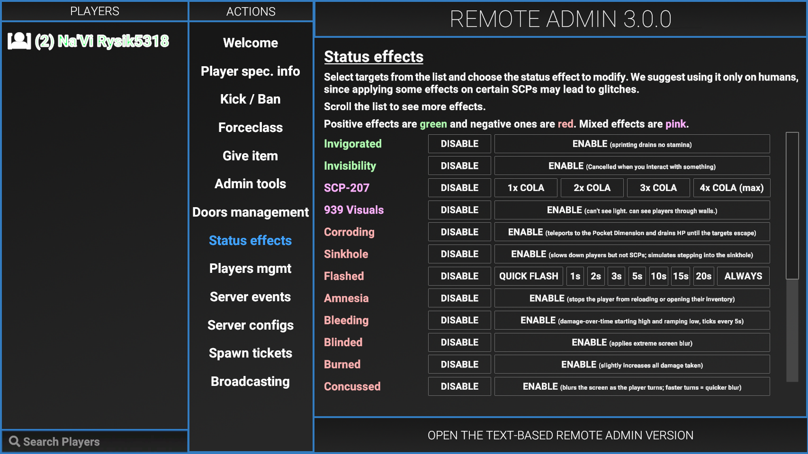

Меню
Функции
Welcome
"Welcome" - это первая страница, которую увидит игрок, когда откроет RA. Это простой способ объяснить игроку как ориентироваться и использовать меню.
Player info
Вкладка "Player info" включает 3 кнопки (в версии 2.0.2): "Request", "Request IP" и "Request Auth".
Использование
- 1. Выбрать игрока из левого столбца под названием "Players".
- 2. Нажмите на одну из 3-х кнопок перечисленных ниже.
Request
Кнопки позволяют пользователю посмотреть следующую информацию:
1. Никнейм2. Player ID
3. SteamID64
4. Роль на сервере
5. Любые спрятанные роли (если уполномочен)
6. Active flags
7. Класс (если уполномочен)
8. HP
Request IP
То же самое, что и "request", но включающее IP адрес, использующийся игроком, чтобы подключится к серверу. Он может использоваться, чтобы найти человека, использующего другие аккаунты, чтобы обходить блокировки.
Request Auth
Отображает аутентификационный токен игроков вместе с QR кодом.

Kick/Ban
Инструменты администратора позволяют модераторам и администраторам серверов легче выполнять свои задачи без использования команд.Использование
1. Выбрать игрока из левого столбца под названием "Players".2. Выберите желанное значение времени для того, чтобы убрать их из игры.
3. Щёлкните "Request".

Forceclass
Позволяет пользователю изменить текущий класс любого игрока. Выберите одного или нескольких игроков, щёлкните на желанный класс, затем нажмите кнопку SET CLASS. "Force Class" - это единственный способ сменить чей-то класс на Обучение без использования плагинов.

Give Item
Позволяет пользователю выдавать предметы любому другому игроку. Выберите одного или нескольких игроков, щёлкните на желанный предмет, затем нажмите кнопку REQUEST. Give Item - это единственный способ получить Монету без использования плагинов. Патроны, выданные игроку этой командой, будут добавлены в его инвентарь и не причисляются к его текущему количеству патронов, таким образом игрокам нужно будет открыть свой инвентарь и выбросить патроны, а затем подобрать патроны обратно, чтобы увеличить их количество патронов.

Admin Tools
Overwatch
Когда игрок находится в режиме "overwatch", он не может появиться за какой-либо класс с помощью команд или своевременного появления. Это полезно для наблюдения за кем-то по подозрению на нарушение правил.God Mode
Когда у игрока включён "god mode", он не может умереть.Bypass Mode
Игрок, который использует "обход", может открыть или использовать любые вещи без требования ключ-карты. Это также позволяет бесконечно использовать интерком.Teleportation
Позволяет модераторам и администраторам телепортировать других игроков туда, куда им нужно. Здесь есть два варианта телепортации, перечисленных ниже.1. Bring - перемещает выбранного пользователя к тому, кто использует команду.
2. Go to - перемещает того, кто использует команду, к выбранному игроку.
Misc
Категория "Misc" включает 2 команды, которые не вписываются ни в одну из других категорий. Эти команды перечислены ниже.1. Heal - исцеляет выбранного игрока до полного выздоровления.
2. Lockdown - блокирует все двери на карте.
Noclip
Позволяет игроку переключаться между noclip'ом с помощью клавиши ALT. Скорость полёта может быть изменена с помощью Колёсика Мыши.Использование
1. Выбрать игрока из левого столбца под названием "Players".2. Выберите один из перечисленных инструментов администратора.

Door Management
Позволяет пользователю взаимодействовать со множеством дверей по всему комплексу. Обычные двери коридоров могут быть выбраны кнопкой "All". "All (listed)" выделит все остальные кнопки, отображённые в меню. Двери, которые ведут в особые комнаты, такие как 012, арсенал КС 049 и так далее, перечислены как кнопки, которые также могут быть выбраны. На кнопках перечисляются возможные взаимодействия.
Любая открытая дверь будет окрашиваться зелёным цветом в RA.
Любая заблокированная дверь будет обводиться красным цветом.
Любая уничтоженная дверь будет окрашиваться красным цветом.
После Обеззараживания все кнопки дверей, находящиеся в Лёгкой Зоне Содержания, будут подсвечены красным, с ними всё ещё можно взаимодействовать.
После взрыва Альфа-Боеголовки все двери, кроме тех, что находятся на Поверхности, будут подсвечены красным.
- Open
- Откроет все выбранные двери.
- Close
- Закроет все выбранные двери.
- Lock
- Заблокирует все выбранные двери.
- Unlock
- Разблокирует все выбранные двери.
- Destroy
- Уничтожит все выбранные двери, за исключением ворот.
- Teleport
- Телепортирует к выбранной двери.

Status Effects
Позволяет пользователю выдать игрокам любой эффект, а также убрать его. Положительные эффекты окрашены зелёным цветом, отрицательные - красным, смешанные эффекты окрашены розовым.

Player Mgmt
Позволяет пользователю управлять способностью игрока пользоваться голосовым чатом.
- Mute
- Заглушит микрофон игрока.
- Unmute
- Уберёт заглушку с микрофона игрока.
- Icom - Mute
- Заблокирует игроку возможность пользоваться Интеркомом.
- Icom - Unmute
- Разблокирует игроку возможность пользоваться Интеркомом.

Server Events
- Respawn MTF
- Призывает Мобильную Опергруппу.
- Respawn CI
- Призывает Повстанцев Хаоса.
- Restart Round
- Перезапускает текущий раунд.
- Start Round
- Начинает раунд.
- Kick Unconn.
- Отключает игроков, которые не до конца подключились к серверу.
- Warhead Start
- Активирует процесс детонации Альфа-Боеголовки.
- Warhead Stop
- Отменяет процесс детонации Альфа-Боеголовки.
- Detonate
- Моментально детонирует Альфа-Боеголовку.
- Icom Timeout
- Отключает Интерком, если игрок в данный момент его использует.
- Icom Reset
- Сбрасывает время восстановления интеркома, позволяя использовать его сразу.
- Round Lock
- Делает текущий раунд бесконечным.
- Lobby Lock
- Останавливает начало раунда в лобби Пожалуйста, подождите.

Server Configs
Позволяет пользователю переключать настройки "Friendly Fire" (Огонь по своим) и "Spawn Protection" (Защита при появлении).
Позволяет пользователю редактировать некоторые параметры конфигурации.

Spawn Tickets
Позволяет пользователю увидеть текущее кол-во Жетонов Возрождения Мобильной Опергруппы и Повстанцев Хаоса. Кнопка "Refresh", находящаяся в правом верхнем углу, нужна для того, чтобы обновить кол-во Жетонов.
В меню будет отображаться 0 Жетонов для обеих команд, пока не будет нажата кнопка "Refresh".
Кнопки "+" и "-" могут использоваться для уменьшения и увеличения количества Жетонов.

Broadcasting
Позволяет отправлять текст на вверху экрана игроку/всем или же убрать объявление. Так же можно выбрать цвет, цветов 6.
- Send To Player
- Отправляет текст игроку в вверху экрана.
- Send To ALL
- Отправляет текст всем игрокам в вверху экрана.
- Clear Input
- Обнуляет форму
- Clear Broadcasts
- Отменяет и удаляет все объявления

Текстовая Админ-Панель
Текстовую Админ-Панель можно открыть нажатием на нижнюю часть Панели Remote Admin.
Команды в Текстовой Панели Администратора требует наличие определённых Прав у роли пользователя для того, чтобы выполнять их. Некоторые права могут дать только ограниченный доступ к командам.
| Название | Псевдоним | Описание | Параметры | Требуемое разрешение |
|---|---|---|---|---|
| Admin Chat | N/A | Показывает сообщение в верхней части экрана, только для администраторов. | @<текст> | ATC |
| Broadcast | BC | Показывает сообщение в верхней части экрана для всех. | broadcast <продолжительность> <текст> | BRC |
| ban | N/A | Блокирует пользователя на сервере. | Ban <playerID> <продолжительность> | BN1, BN2, BN3 |
| buildinfo | N/A | Выводит информацию о текущей сборке. | Buildinfo | |
| cassie | N/A | Позволяет игроку использовать C.A.S.S.I.E. для создания оповещений. | cassie <Pitch_X.x> <jam_(задержка)_(кол-во заиканий)> <слова> | ANN |
| cassiewords | N/A | Выводит все слова C.A.S.S.I.E., которые она может сказать. | cassiewords | ANN |
| contact | N/A | Перечисляет контактную информацию сервера. | contact | |
| config | cfg | Позволяет отладить и перезагрузить конфигурацию сервера. | config path config reload config value <вариант_конфигурации> |
CFG |
| disarm | da | Разоружает игрока, можно освободить только с помощью команды release. | disarm <playerID> | PLM |
| ffd | tk/tkd | Показывает урон/убийства, совершённые игроком по дружественным классам. Отключает/Включает "Friendly Fire" (Огонь по своим). | ffd <playerID> ffd status ffd pause ffd unpause |
FFT |
| groups | N/A | Перечисляет все роли на сервере и их права. | groups | * |
| help | N/A | Показывает список команд и открывает вики-страницу Панели Администратора. Показывает справку для команды. |
help <название_команды> |
|
| HP | N/A | Задаёт определённое значение HP для игрока. | hp <playerID> <значение> | PLM |
| icom | speak | Включает оповещение через интерком | icom | BRC |
| intercomtext | icomtxt | Изменяет текст на экране интеркома. | intercomtext <текст> | BRC |
| oban | N/A | Блокирует отключённого игрока. Продолжительность также можно указать в единицах измерения. | oban <userIP> <продолжительность> <причина> oban <steamID/discordID> <продолжительность> <причина> |
|
| overcharge | ocharge | Выключает освещение в ТЗС, также можно выключить и в ЛЗС. | overcharge <продолжительность> <толькоТЗС> = (true/false) | FCM |
| perm | N/A | Перечисляет все Ваши права. | perm | * |
| Ping | N/A | Показывает Вашу текущую задержку. | ping ping <playerID> |
* |
| playerinventory | playerinv/pinv/pinventory | Показывает инвентарь игроков. | playerinventory <playerID> | PLM |
| PM | N/A | Используется для редактирования разрешений групп. | pm groups Для всех команд, перечисленных ниже, добавляйте "pm group" в начало. info <название_группы> grant/revoke <название_группы> <название_разрешения> setcolor <название_цвета> settag <groupname> <название_ярлыка> enablecover/disablecover <название_группы> |
PRM |
| refreshcommands | N/A | Перезагружает все команды. | refreshcommands | |
| release | free | Освобождает разоружённого игрока. | release <playerID> | PLM |
| ridlist | rids | Выводит ID всех комнат. | ridlist | |
| roomtp | rtp/ridtps | Телепортирует к соответствующему ID комнаты. | roomtp <roomID> | PLM |
| roundtime | rt | Показывает текущую продолжительность раунда. | roundtime | SCC |
| setgroup | N/A | Временно задаёт группу кому-нибудь. | setgroup <playerID> <название_группы> | SGR |
| stopnextround | N/A | Останавливает сервер в конце следующего раунда. | stopnextround | PRM |
| Unban | N/A | Разблокирует игрока на сервере. | Unban id <playerID> Unban ip <userIP> |
BN3 |
Коды Прав
Сортировочная таблица кодов прав. Щелкните на заголовки, для их сортировки.
| Код | Название в файле конфигурации | Предоставляет доступ к панели администратора |
|---|---|---|
| (*) | Любое право | Н/Д |
| BN1 | KickingAndShortTermBanning | ДА |
| BN2 | BanningUpToDay | ДА |
| BN3 | LongTermBanning | ДА |
| FSE | ForceclassSelf | ДА |
| FSP | ForceclassToSpectator | ДА |
| FWR | ForceclassWithoutRestrictions | ДА |
| GIV | GivingItems | ДА |
| EWA | WarheadEvents | ДА |
| ERE | RespawnEvents | ДА |
| ERO | RoundEvents | ДА |
| SGR | SetGroup | ДА |
| GMD | GameplayData | ДА |
| OVR | Overwatch | НЕТ |
| FCM | FacilityManagement | ДА |
| PLM | PlayersManagement | ДА |
| PRM | PermissionsManagement | ДА |
| SCC | ServerConsoleCommands | ДА |
| VHB | ViewHiddenBadges | НЕТ |
| CFG | ServerConfigs | ДА |
| BRC | Broadcasting | ДА |
| CDA | PlayerSensitiveDataAccess | ДА |
| NCP | Noclip | НЕТ |
| AFK | AFKImmunity | НЕТ |
| ATC | AdminChat | ДА |
| GHB | ViewHiddenGlobalBadges | НЕТ |
| ANN | Announcer | ДА |
| EFF | Effects | ДА |
| FFI | FriendlyFireDetectorImmunity | НЕТ |
| FFT | FriendlyFireDetectorTempDisable | ДА |
ID Комнат
Сортировочная таблица для ID комнат. Обратите внимание, что несколько комнат могут иметь одинаковый ID. Щелкните на заголовки для их сортировки.
Не у каждой комнаты есть свой ID. Если нужной вам комнаты нет в списке, то вполне вероятно, что у неё нет ID.
| ID | Описание | Зона | Номер комнат |
|---|---|---|---|
| CROSSING | Перекрёсток в ЛЗС | ЛЗС | 2 |
| GATE_A | Область Поверхности у лифта, ведущего к Воротам А | Зона Поверхности | 1 |
| HC_079_CR | Камера Содержания SCP 079 | ТЗС | 1 |
| HC_079_HALL | Пространство между двумя бронированными дверьми, ведущее к КС SCP 079 | ТЗС | 2 |
| HC_079_MON | Комната наблюдения за SCP 079 | ТЗС | 1 |
| HC_096_CR | Предположительно КС 096, но на самом деле это комната хранения MicroHID | ТЗС | 1 |
| HC_106_CR | Комната SCP 106, причем как комнаты за закрытыми дверями, так и комнаты со свободным доступом имеют одинаковые ID. | ТЗС | 3 |
| HC_457_CR | Комната появления SCP 096 | ТЗС | 1 |
| HC_SERVERS | Серверная комната | ТЗС | 4 |
| HC_TESLA_B | Все Ворота Теслы в ТЗС | ТЗС | 4 |
| HID | Прямо снаружи комнаты хранения MicroHID | ТЗС | 1 |
| Intercom | Прямо снаружи помещения с Интеркомом | Входная Зона | 1 |
| LC_914_CR | Внутри Камеры Содержания SCP 914 | ЛЗС | 1 |
| LC_ARMORY | Предположительно оружейная в ЛЗС, но на самом деле это красные комнаты во Входной Зоне | Входная Зона | 2 |
| LC_CAFE | Офисная комната в ЛЗС | ЛЗС | 1 |
| nuke_hcz | Прямо снаружи лифта, ведущего в Комнату с Боеголовкой | ТЗС | 1 |
| nukesite | Прямо перед Панелью Управления включением ядерной боеголовки | ТЗС | 1 |
| Offices_PCs | Огромная офисная комната во Входной Зоне | Входная Зона | 1 |
| Offices_PCs_small | Небольшая офисная комната во Входной Зоне | Входная Зона | 1 |
| Offices_upstair | Офисная комната с лестницей во Входной Зоне | Входная Зона | 1 |
| Shelter | Прямо снаружи бронированной двери, ведущей в Эвакуационное Убежище | Входная Зона | 1 |
| Smallrooms2 | Прямой коридор с двумя заблокированными дверьми во Входной Зоне | Входная Зона | 1 |
| Straight_4 | Прямой коридор во Входной Зоне | Входная Зона | 1 |
| topsite | Прямо снаружи Комнаты Управления Боеголовкой на Поверхности | Зона Поверхности | 1 |
Список слов CASSIE
Полный список фраз и слов CASSIE можно найти здесь.
Команда - Help
Возвращает все команды с их описаниями и псевдонимами или отборажает справку для sp...
Галерея -
{kind=link}
Команда - htag/stag
Скрыть/Показать ваш собственный префикс
Галерея -
{kind=link}
{kind=link}
{kind=link}
Команда - ban [Стим айди 64/Имя игрока/IP игрока] [Время(h,d,y)] Причина Бана
Писать без скобочек!
Банит игрока на время на сервере
Команда - oban [Стим айди 64/IP игрока] [Время(h,d,y)] Причина Бана
Писать без скобочек!
Банит игрока во оффлайне
Команда - speak/icom
С помощью этой команды можно говорить в интеркоме на расстоянии. Чтобы вкл/выкл надо прописать команду заново.
cassie (текст)
C.A.S.S.I.E. используемая этой командой, отделена от C.A.S.S.I.E. которая делает обычные объявления в игре(например прибытие подкрепления МОГ), эта команда будет воспроизводить всё доступное, включая другие слова "cassie".

cassie_sl (текст)
C.A.S.S.I.E. используемая этой командой, отделена от C.A.S.S.I.E. которая делает обычные объявления в игре(например прибытие подкрепления МОГ), эта команда будет воспроизводить всё доступное, включая другие слова "cassie_sl".
Команда cassie_sl отличается от cassie тем, что cassie_sl начинает сразу говорить фразу, без начального оповещения.